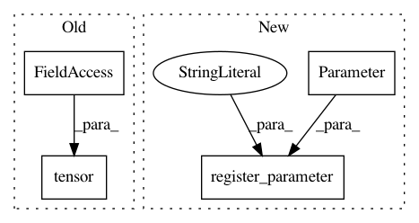

ce96b03b07a4a4bdd851aa84493c616cd291aff2,rllib/agents/ddpg/ddpg_torch_model.py,DDPGTorchModel,__init__,#DDPGTorchModel#Any#Any#Any#Any#Any#Any#Any#Any#Any#Any#Any#,22
Before Change
self.bounded = np.logical_and(action_space.bounded_above,
action_space.bounded_below).any()
self.low_action = torch.tensor(action_space.low, dtype=torch.float32)
self.action_range = torch.tensor(
action_space.high - action_space.low, dtype=torch.float32)
self.action_dim = np.product(action_space.shape)
After Change
self.bounded = np.logical_and(self.action_space.bounded_above,
self.action_space.bounded_below).any()
low_action = nn.Parameter(
torch.from_numpy(self.action_space.low).float())
low_action.requires_grad = False
self.register_parameter("low_action", low_action)
action_range = nn.Parameter(
torch.from_numpy(self.action_space.high -
self.action_space.low).float())
action_range.requires_grad = False
In pattern: SUPERPATTERN
Frequency: 3
Non-data size: 4
Instances
Project Name: ray-project/ray
Commit Name: ce96b03b07a4a4bdd851aa84493c616cd291aff2
Time: 2020-10-06
Author: sven@anyscale.io
File Name: rllib/agents/ddpg/ddpg_torch_model.py
Class Name: DDPGTorchModel
Method Name: __init__
Project Name: cornellius-gp/gpytorch
Commit Name: 9c526695805c9639896b31364958d0e77bdeba62
Time: 2018-11-14
Author: gardner.jake@gmail.com
File Name: gpytorch/kernels/kernel.py
Class Name: Kernel
Method Name: __init__
Project Name: cornellius-gp/gpytorch
Commit Name: d44475866914c19f23c0f8a833951f9989250334
Time: 2018-11-17
Author: balandat@fb.com
File Name: gpytorch/kernels/kernel.py
Class Name: Kernel
Method Name: __init__